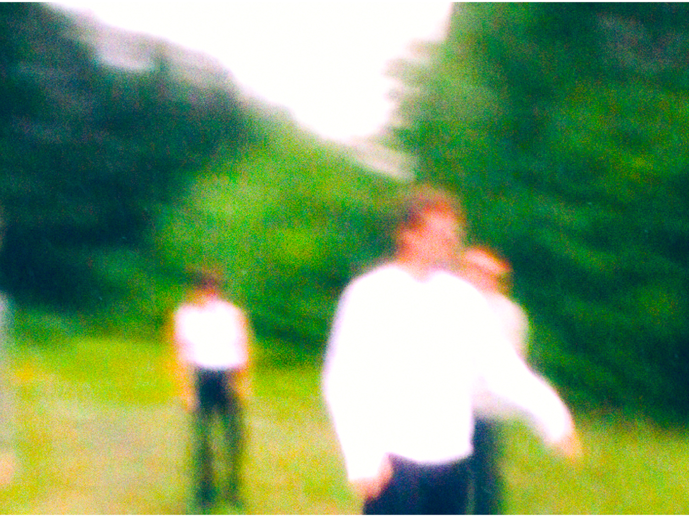
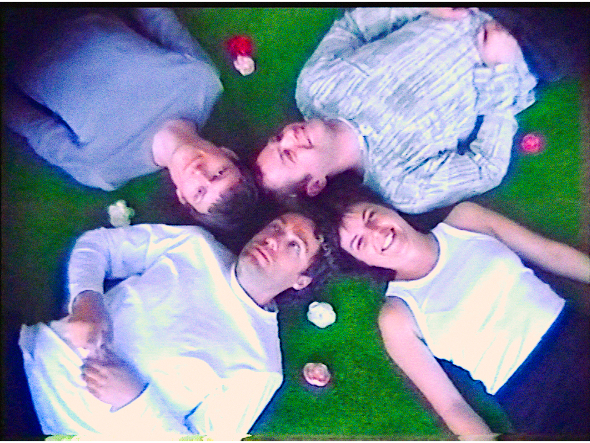

Video Works
Comforter2 - FOUND IT ALL
Comforter2's EP release, accompanied by a video clip. After searching for a long time, the band finally finds what they are looking for.
 HOT PATCH


Pictures taken on set by Marc Elisabeth.
The punk band Hot Patch is driving to their next show. The car is filled with excitement and giggles until flashes of memories make them realize: "This is not what we want!" Hot Patch is over and done with! A new future is looking brighter than ever. They can be anything they want, if only they could shake off the past.
Pip Blom - 'You Don't Want This'
This clip was made in the summer of ‘21 for the Dutch band Pip Blom and their single ‘You Don’t Want This’. It tells the story of dissociating from your own personality while getting lost in your stage character. The schism between the audience that thinks they know you, and the view of yourself that is distanced from the person you used to be.
Global Charming - OFFICE HELL
Music video for the Dutch band Global Charming for the single ‘Office Hell’. The clip tells the story of the absurd horrors of a 9 to 5.
Global Charming - SOFT FRUIT
TT Elzinga - PARLOUR GIRLS
Baby's Berserk - LIVE REGISTRATION
Global Charming - BANDCAMP


Girls to the Front - Live performance - registration

An experimental performance about (self-)inflicted restriction of movement.